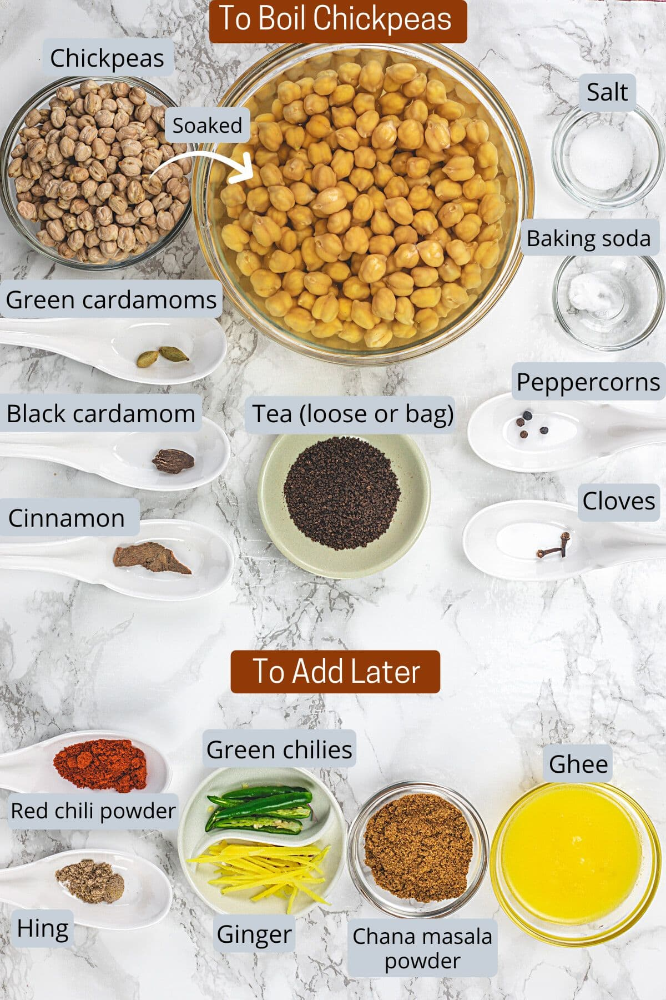

Chole Bhature Recipe

Ingredients
- 2 cups dried chickpeas (soaked overnight)
- 1 large onion (finely chopped)
- 2 tomatoes (pureed)
- 2-3 green chilies (slit)
- 1 tablespoon ginger-garlic paste
- 1 teaspoon cumin seeds
- 1 teaspoon coriander powder
- 1 teaspoon garam masala
- 1/2 teaspoon turmeric powder
- Salt to taste
- Oil (for cooking)
- Fresh coriander leaves (for garnish)
- For Bhature: 2 cups all-purpose flour, 1/2 cup yogurt, baking powder, salt, and oil for frying
Instructions
- Pressure cook soaked chickpeas with water and salt until soft. Drain and set aside.
- In a pan, heat oil and add cumin seeds. Once they splutter, add chopped onions and sauté until golden brown.
- Add ginger-garlic paste and green chilies; cook for another minute.
- Add tomato puree, coriander powder, turmeric, and salt; cook until the oil separates.
- Add cooked chickpeas and water as needed. Stir in garam masala and simmer for 10 minutes.
- For Bhature: Mix flour, yogurt, baking powder, and salt. Knead into a soft dough and let it rest for 30 minutes.
- Roll out the dough and deep fry until golden brown.
- Serve Chole hot, garnished with fresh coriander, alongside crispy Bhature.
Dietary Restrictions
This recipe is vegetarian and can be made vegan by using plant-based yogurt for the Bhature.
Back to Recipes